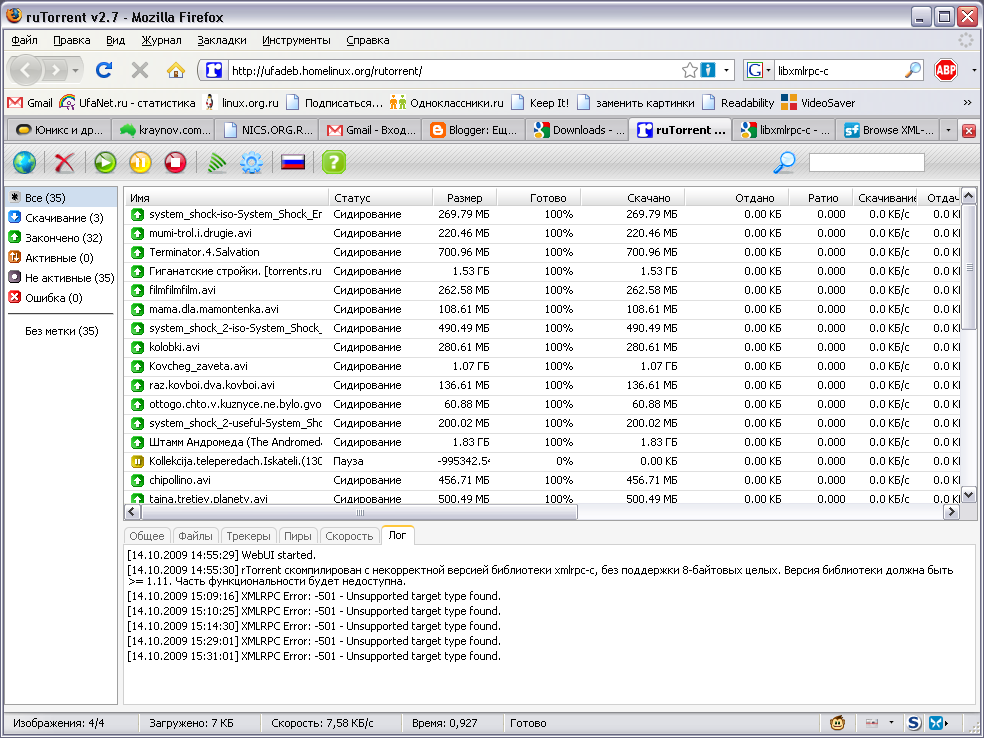

В последнее время нахожусь в поисках оптимального torrent-клиента. Когда-то я пользовался transmission-daemon в купе с web-интерфейсом clutch, затем пересел на rtorrent, запущенный в сеансе screen. При необходимости управлял им через ssh.
Недавно снова попробовал свежую версию transmission-daemon. Как оказалось, в свежей версии transmission-daemon web-клиент уже встроен вовнутрь демона. Работает без падений - всё отлично, но хочется рассмотреть по возможности побольше вариантов, чтобы выбрать оптимальный.
Недавно я наткнулся на лестные отзывы о web-интерфейсе rutorrent для rtorrent. Сам интерфейс очень похож на web-интерфейс (и на GUI-интерфейс) программы uTorrent.
web-интерфейс будет обслуживаться web-сервером lighttpd, а rtorrent будет запущен в screen-сеансе. Для работы web-интерфейса нам понадобится PHP, а для настройки ограничения доступа - утилита htdigest из пакета apache2-utils. Если вы не хотите её устанавливать, то вместо неё можете воспользоваться следующим сценарием lightdigest.sh.
Поставим необходимое нам:
# aptitude install rtorrent screen lighttpd php5-cgi apache2-utils
Для начала я создал простенький файл конфигурации ~/.rtorrent.rc для rtorrent в домашнем каталоге пользователя, от имени которого будет работать rtorrent:
port_range = 6925-6925 directory = /home/rtorrent session = /home/rtorrent/.rtorrent-session/ load_start = /home/rtorrent/torrents/* scgi_port = 127.0.0.1:5000
port_range - опция задаёт диапазон TCP-портов, который будет прослушиваться в ожидании подключения других torrent-клиентов и будет анонсироваться трекерам. В данном случае это всего один TCP-порт 6925. Если его не указать, то при каждом запуске rtorrent будет слушать и анонсировать случайный диапазон портов. Задаю я этот параметр по одной простой причине - чтобы потом проковырять в фаерволле соответствующую дырочку.
Теперь настроим lighttpd, добавим в файл /etc/lighttpd/lighttpd.conf следующие настройки:
server.modules += ( "mod_fastcgi" )
fastcgi.server = (
".php" =>
(
(
"bin-path" => "/usr/bin/php5-cgi",
"socket" => "/tmp/php.socket",
"max-procs" => 2,
"idle-timeout" => 20,
"bin-environment" =>
(
"PHP_FCGI_CHILDREN" => "1",
"PHP_FCGI_MAX_REQUESTS" => "10000"
),
"bin-copy-environment" =>
(
"PATH",
"SHELL",
"USER"
),
"broken-scriptfilename" => "enable"
)
)
)
server.modules += ( "mod_scgi" )
scgi.server = (
"/RPC2" =>
(
"127.0.0.1" =>
(
"host" => "127.0.0.1",
"port" => 5000,
"check-local" => "disable",
"disable-time" => 0,
)
)
)
server.modules += ( "mod_auth" )
auth.backend = "htdigest"
auth.backend.htdigest.userfile = "/etc/lighttpd/htdigest"
auth.require = (
"/RPC2" =>
(
"method" => "digest",
"realm" => "rTorrent RPC",
"require" => "user=rtorrent"
)
)
Этот фрагмент включает и настраивает три плагина lighttpd:
С помощью утилиты htdigest создадим файл с паролем для пользователя rtorrent и области "rTorrent RPC":
# htdigest -c /etc/lighttpd/htdigest "rTorrent RPC" rtorrent
Если в файле паролей уже есть какие-то записи, то предыдущую команду выполним без опции "-c", чтобы файл не был перезаписан, а был только лишь дополнен новой записью. Соответственно, если вы уже использовали авторизацию по htdigest, файл паролей может находиться в другом месте, в том куда вы его до этого положили. В таком случае нужно поправить путь к файлу паролей в опции auth.backend.htdigest.userfile, указанной в фрагменте /etc/lighttpd/lighttpd.conf выше.
Теперь пришло время скачать со страницы http://code.google.com/p/rutorrent/downloads/list архив rtorrent с файлами web-интерфейса rutorrent. Остальные перечисленные на этой странице файлы являются плагинами к rutorrent.
$ wget http://rutorrent.googlecode.com/files/rtorrent-2.7.tar.gz
Создадим каталог для размещения файлов из архива:
# cd /var/www $ mkdir rutorrent
И распакуем архив в него:
# tar xzvf rtorrent-2.7.tar.gz -C /var/www/rutorrent
Видим, что файлы распаковались в каталог /var/www/rutorrent/rtorrent. Мне это не понравилось, я переместил файлы так, как и было изначально мной задумано:
# cd /var/www/rutorrent # mv rtorrent/* . # rmdir rtorrent
Теперь дадим приложению права на запись в каталоги torrents и settings:
# chown www-data:www-data torrents settings
Заходим по адресу http://ваш-IP/rutorrent, проходим аутентификацию и изучаем интерфейс:
Примечания: